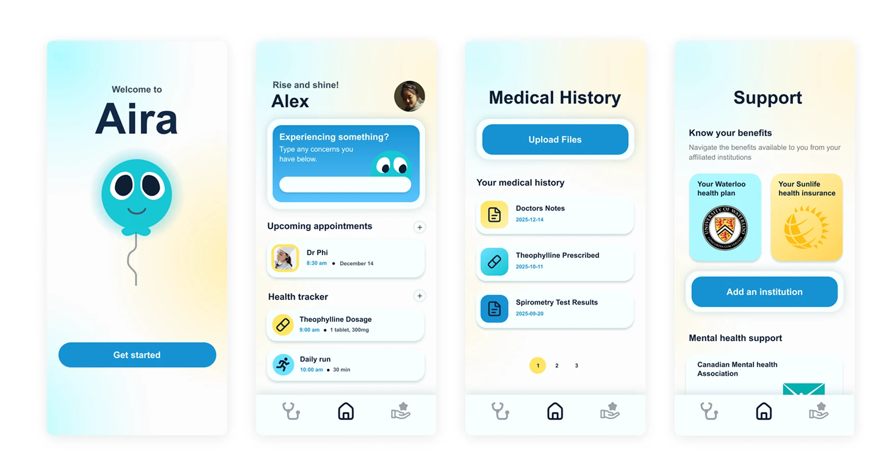

Aira: managing asthma
Introduction
Every term in my program, GBDA, Sun Life runs a design jam at Waterloo's Stratford campus. Student teams get a real healthcare challenge to solve.

Problem
A new chronic illness diagnosis comes with a lot at once: a fragmented healthcare system, hard-to-understand insurance benefits, and lifestyle changes patients are expected to figure out on their own. For Aira to matter, it had to help people understand their benefits, find their way through care pathways, and feel supported while they adjusted to living with the condition long term.

Who we're building for
Meet Alex, a 16-year-old student living with asthma that's poorly managed because of inconsistent care, limited health literacy at home, and a healthcare system that doesn't make things easy. Alex's family are newcomers to Canada, and both Alex and her parents struggle to make sense of medical information, find the right services, and catch early warning signs before they become emergencies. Those gaps are what send preventable cases to the ER.

What are the pain points?
Three challenges kept coming up, both in Alex's story and in the interviews we ran with real participants.

ClarityMedical information is scattered across different documents. Alex can't see her own history as one clear picture, and that chips away at her confidence in managing her asthma over time.

UnderstandingAlex struggles to read her own asthma reactions and decide what to do about them. That leads to delayed care, or ER trips that didn't need to happen.

SupportNewcomer families run into real barriers to health literacy and care access. Dense medical language and an unfamiliar system make it hard for families like Alex's to use the resources already available to them.
Ideation
We started with a Crazy Eights sprint: eight fast, rough sketches each, all aimed at Alex's challenges. When the timer stopped, we walked each other through our ideas and explained which pain point each concept solved. A lot of the sketches overlapped, which made it easy to agree on shared priorities and confirm we were headed in the same direction.

Information architecture
Once we shared our ideas, we mapped each one back to a specific challenge Alex was facing. Some features tackled more than one challenge at once. We could point to exactly which problem a feature solved before it earned a place in the app, and that discipline is what let us organize everything into three clear tabs in our site map.

Every feature on this map was matched to a challenge before it made the cut. No orphaned ideas.
The solution
Clarity
Alex and the people we interviewed had the same problem: appointments were scattered and disconnected, so every visit felt like starting from zero. Aira puts a user's medical history in one place they can read. An AI summary turns a doctor's notes into plain language, so health literacy stops deciding whether someone understands their own care. With everything on file, Alex never has to rebuild her history from memory again.
Organization tools
Confidence starts with knowing what happens next. The Home page keeps her appointments and daily habits together, and she can add to either, so managing her asthma stops feeling like a scavenger hunt.
Understanding
The Home page also keeps a quick-help companion on standby for whatever Alex is feeling in the moment. It runs a short questionnaire built from our research, then gives her suggestions and information based on the answers.
Support
Sun Life's own research found that a lot of patients don't know what care resources are available to them. That sends unnecessary traffic to doctors and strains a system already stretched thin. To close the gap, we built plain guides that help people understand and use the care plans they already have.
Better integration
Users can link their institution straight to their account, so benefits and coverage information arrives on its own instead of being something families have to dig up.
The next steps
As the jam wound down, we started talking about what we would take on next if Aira were ever built for real.
Usability testing
Put Aira in front of people like Alex and her parents to see whether the medical summaries land, how much the organization tools help day to day, and whether the AI companion holds up.
Expand on support
Keep researching the chronic-health benefits different institutions offer, so the guides stay accurate and worth using.
Personalization
Let Aira pick up patterns in a user's symptoms over time, so it adapts as their condition changes instead of treating every check-in the same.
What I learned
Every feature serves a purpose
Partway through ideation we caught a few features that didn't tie back to the app's core goal. After that, we wrote down how each feature served that goal before it was allowed to stay on the list.
Organization is clarity
How we organized the features mattered as much as the features themselves. For Alex to manage her asthma better, her tools had to be easy to reach, not just present.
We also had to pick a mascot. I campaigned hard for a dragon. We ended up with a balloon.

Next project